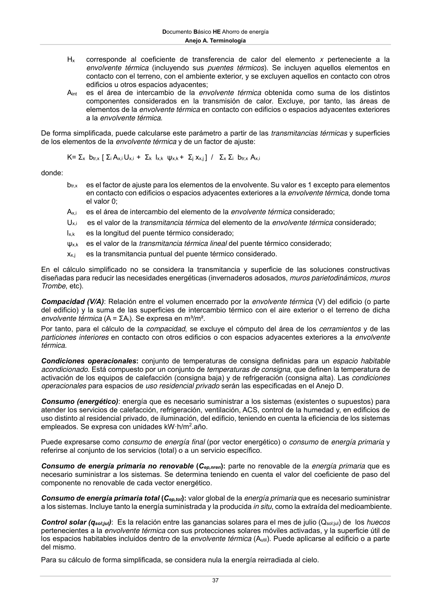

DB-HE · Anejo A: · versión 2022-06-14 · capa oficial
Formatos: JSON compacto · Markdown · PDF fuente
Ámbito del documento · texto del ámbito · documento y tablas
ID técnico a0072 · PDF pág. 36-39 · jerarquía no validada por persona · contrastado con el literal de la página 36 (candidato tipográfico); no validado por persona · padre: raíz
Anejo A: Tabla a-Anejo A. Nivel de carga interna Nivel de carga interna Carga interna media, CFI [W/m2] Baja CFI < 6 Media 6 ≤ CFI < 9 Alta 9 ≤ CFI < 12 Muy alta 12 ≤ CFI Carga interna media(CFI): carga media horaria de una semana tipo, repercutida por unidad de superficie del edificio o zona del edificio, teniendo en cuenta la carga sensible debida a la ocupación, la carga debida a iluminación y la carga debida a los equipos: CFI = ΣCoc / (7·24) + ΣCil / (7·24) + ΣCeq / (7·24) ΣCoc = suma de las cargas sensibles nominales por ocupación [W/m²], por hora y a lo largo de una semana tipo ΣCil = suma de las cargas nominales por iluminación [W/m²], por hora y a lo largo de una semana tipo ΣCeq = suma de las cargas nominales de equipos [W/m²], por hora y a lo largo de una semana tipo La carga interna media (CFI) del edificio se obtiene ponderando por la superficie útil la carga interna media de cada espacio. Se expresa en W/m2. Cerramiento: elemento constructivo del edificio que lo separa del exterior, ya sea aire, terreno u otros edificios. Comprende las cubiertas, suelos, huecos, fachadas/muros y medianeras. En la intervención en edificios existentes, cuando un elemento de cerramiento separe una zona ampliada respecto a otra existente, se considerará perteneciente a la zona ampliada Cerramiento adiabático: cerramiento a través del cual se considera que no se produce intercambio de calor. Clima de referencia: clima normalizado que define los parámetros climáticos (temperatura, radiación solar…) representativos de una zona climática concreta para el cálculo de la demanda. Permite estandarizar las solicitaciones exteriores. Coeficiente de transmisión luminosa del vidrio (T): porcentaje de luz natural en su espectro visible que deja pasar un vidrio. Se expresa en tanto por uno (fracción) o tanto por ciento (%). Coeficiente global de transmisión de calor (a través de la envolvente térmica del edificio) (K): Valor medio del coeficiente de transmisión de calor para la superficie de intercambio térmico de la envolvente (Aint). Se expresa en W/m2·K: donde: K= Σx Hx / Aint Documento Básico HE Ahorro de energía Anejo A. Terminología 37 Hx corresponde al coeficiente de transferencia de calor del elemento x perteneciente a la envolvente térmica (incluyendo sus puentes térmicos). Se incluyen aquellos elementos en contacto con el terreno, con el ambiente exterior, y se excluyen aquellos en contacto con otros edificios u otros espacios adyacentes; Aint es el área de intercambio de la envolvente térmica obtenida como suma de los distintos componentes considerados en la transmisión de calor. Excluye, por tanto, las áreas de elementos de la envolvente térmica en contacto con edificios o espacios adyacentes exteriores a la envolvente térmica. De forma simplificada, puede calcularse este parámetro a partir de las transmitancias térmicas y superficies de los elementos de la envolvente térmica y de un factor de ajuste: K= Σx btr,x [ Σi Ax,i Ux,i + Σk lx,k ψx,k + Σj xx,j ] / Σx Σi btr,x Ax,i donde: btr,x es el factor de ajuste para los elementos de la envolvente. Su valor es 1 excepto para elementos en contacto con edificios o espacios adyacentes exteriores a la envolvente térmica, donde toma el valor 0; Ax,i es el área de intercambio del elemento de la envolvente térmica considerado; Ux,i es el valor de la transmitancia térmica del elemento de la envolvente térmica considerado; lx,k es la longitud del puente térmico considerado; ψx,k es el valor de la transmitancia térmica lineal del puente térmico considerado; xx,j es la transmitancia puntual del puente térmico considerado. En el cálculo simplificado no se considera la transmitancia y superficie de las soluciones constructivas diseñadas para reducir las necesidades energéticas (invernaderos adosados, muros parietodinámicos, muros Trombe, etc). Compacidad (V/A): Relación entre el volumen encerrado por la envolvente térmica (V) del edificio (o parte del edificio) y la suma de las superficies de intercambio térmico con el aire exterior o el terreno de dicha envolvente térmica (A = ΣAi). Se expresa en m³/m². Por tanto, para el cálculo de la compacidad, se excluye el cómputo del área de los cerramientos y de las particiones interiores en contacto con otros edificios o con espacios adyacentes exteriores a la envolvente térmica. Condiciones operacionales: conjunto de temperaturas de consigna definidas para un espacio habitable acondicionado. Está compuesto por un conjunto de temperaturas de consigna, que definen la temperatura de activación de los equipos de calefacción (consigna baja) y de refrigeración (consigna alta). Las condiciones operacionales para espacios de uso residencial privado serán las especificadas en el Anejo D. Consumo (energético): energíaque es necesario suministrar a los sistemas (existentes o supuestos) para atender los servicios de calefacción, refrigeración, ventilación, ACS, control de la humedad y, en edificios de uso distinto al residencial privado, de iluminación, del edificio, teniendo en cuenta la eficiencia de los sistemas empleados. Se expresa con unidades kW·h/m2.año. Puede expresarse como consumo de energía final (por vector energético) o consumo de energía primaria y referirse al conjunto de los servicios (total) o a un servicio específico. Consumo de energía primaria no renovable (Cep,nren): parte no renovable de la energía primaria que es necesario suministrar a los sistemas. Se determina teniendo en cuenta el valor del coeficiente de paso del componente no renovable de cada vector energético. Consumo de energía primaria total (Cep,tot): valor global de la energía primaria que es necesario suministrar a los sistemas. Incluye tanto la energía suministrada y la producida in situ, como la extraída del medioambiente. Control solar (qsol;jul): Es la relación entre las ganancias solares para el mes de julio (Qsol;jul) de los huecos pertenecientes a la envolvente térmica con sus protecciones solares móviles activadas, y la superficie útil de los espacios habitables incluidos dentro de la envolvente térmica (Autil). Puede aplicarse al edificio o a parte del mismo. Para su cálculo de forma simplificada, se considera nula la energía reirradiada al cielo. Documento Básico HE Ahorro de energía Anejo A. Terminología 38 qsol;jul = Qsol;jul / Autil= (Σk Fsh;obst · ggl;sh;wi · (1 − FF ) · Aw;p · Hsol;jul) / Autil donde: Fsh;obst es el factor reductor por sombreamiento por obstáculos externos (comprende todos los elementos exteriores al hueco como voladizos, aletas laterales, retranqueos, obstáculos remotos, etc.), para el mes de julio, del hueco k, y representa la reducción en irradiación solar incidente debida al sombreamiento permanente de dichos obstáculos. ggl;sh;wi es la transmitancia total de energía solar del acristalamiento con el dispositivo de sombra móvil activado, para el mes de julio y del hueco k; FF es la fracción de marco del hueco k (de forma simplificada puede adoptarse el valor de 0,25) Aw;p es la superficie (m2) del hueco k; Hsol;jul es la irradiación solar media acumulada del mes de julio (kWh/m²·mes) para el clima considerado y la inclinación y orientación del hueco k; Autil área considerada conforme a lo establecido en el apartado 4.6 del HE0 Cubierta: cerramiento en contacto con el aire exterior o con el terreno por su cara superior y cuya inclinación es inferior a 60º respecto al plano horizontal. Demanda (energética): energía útil necesaria que tendrían que proporcionar los sistemas técnicos para mantener en el interior del edificio unas condiciones definidas reglamentariamente. Se puede dividir en demanda energética de calefacción, de refrigeración, de agua caliente sanitaria (ACS), de ventilación, de control de la humedad y de iluminación, y se expresa en kW·h/m2.año. Edificio de consumo de energía casi nulo: edificio, nuevo o existente, que cumple con las exigencias reglamentarias establecidas en este Documento Básico “DB HE Ahorro de Energía” en lo referente a la limitación de consumo energético para edificios de nueva construcción. Eficacia luminosa: cociente entre el flujo luminoso emitido y la potencia eléctrica de la fuente. Se expresa en lm/W (lúmenes/vatio). Energía final: energía tal y como se utiliza en los puntos de consumo. Es la suministrada a los sistemas del edificio para proveer los servicios; normalmente este suministro se realiza a través de combustibles, generación in situ o redes específicas (electricidad, gas, calor o frío de distrito, etc). Según su origen de generación puede clasificarse la energía final en: a) in situ, que comprende aquella generada en el edificio o en la parcela de emplazamiento del edificio, sea de tipo solar fotovoltaica, solar térmica, energía térmica extraída del ambiente, etc.; b) en las proximidades del edificio, que comprende aquella con procedencia local o en el distrito, como la biomasa sólida, los sistemas urbanos de calefacción o refrigeración, la electricidad generada en las proximidades del edificio, etc.; c) distante, que comprende el resto de orígenes, como en el caso de los combustibles fósiles o el de la electricidad de red. Energía primaria: energía suministrada al edificio procedente de fuentes renovables y no renovables, que no ha sufrido ningún proceso previo de conversión o transformación. Es la energía contenida en los combustibles y otras fuentes de energía e incluye la energía necesaria para generar la energía final consumida, incluyendo las pérdidas por su transporte hasta el edificio, almacenamiento, etc. Energía primaria = Energía final + Pérdidas en transformación + Pérdidas en transporte Documento Básico HE Ahorro de energía


PDF fuente redistribuible: copia fiel enlazada en esta página (SHA256 verificado).